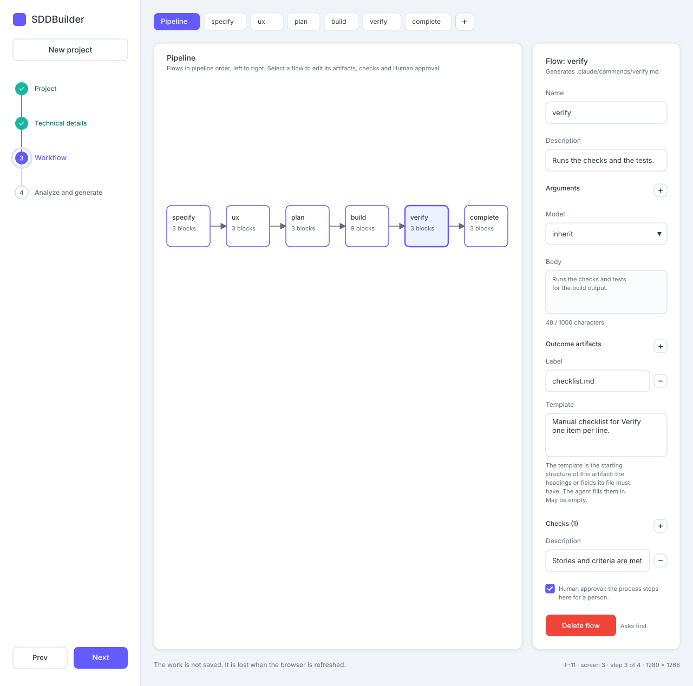
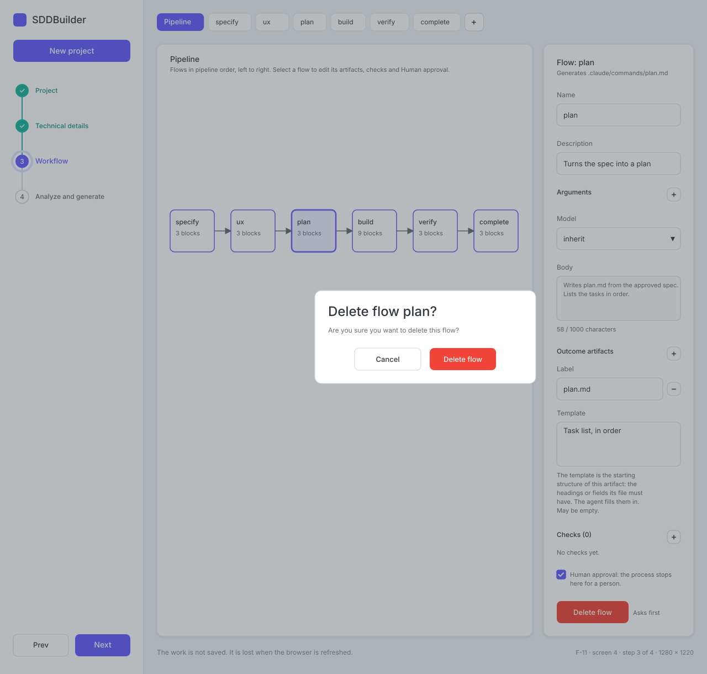
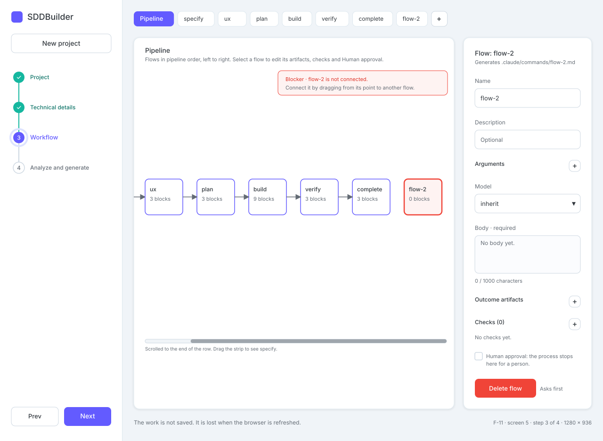
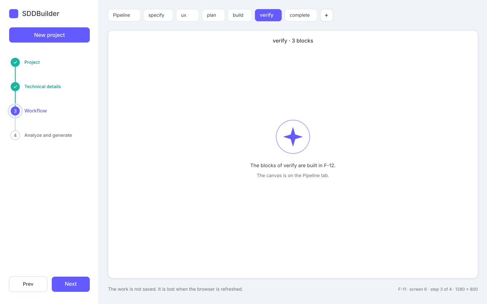
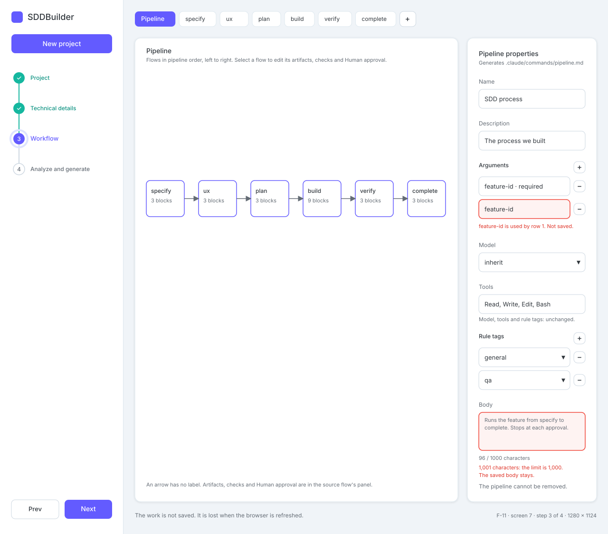
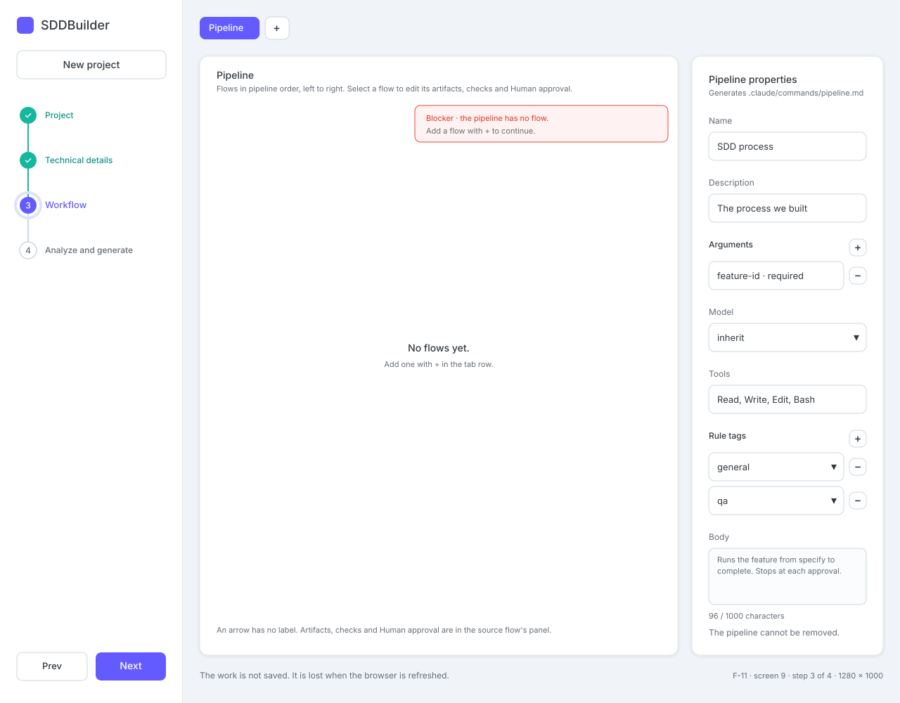
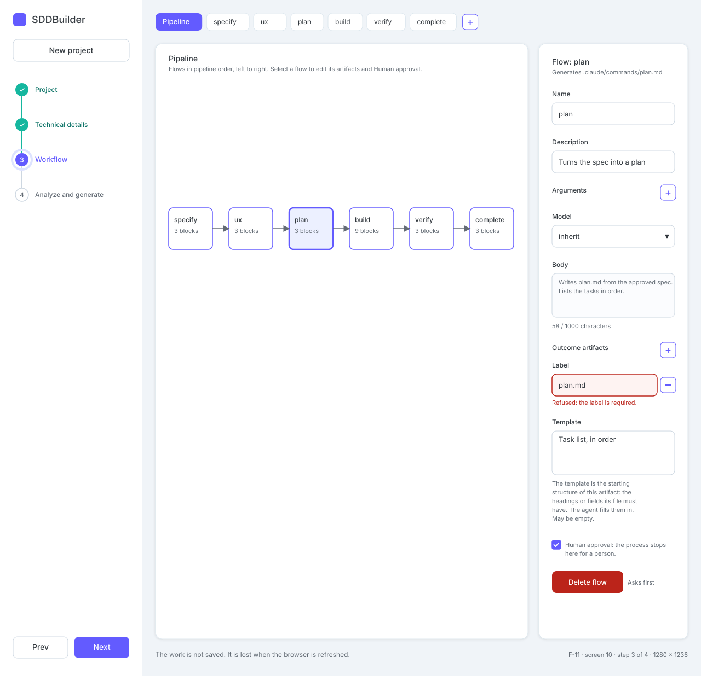

01 The Pipeline tab with the default pipeline
Six flows in order and five arrows with no label. No toolbox: the canvas takes its space. The pipeline's properties are on the right.

Step 3 of the wizard. The Pipeline tab has no toolbox; flows are boxes on the canvas, connections are arrows with no label. A connection's panel shows only its source and target. A flow's panel holds its outcome artifacts, its checks and its Human approval checkbox. Every screen uses the frame of screen 01: the wizard steps in a left panel, the tabs and cards in the content area, and the footer note inside it. Wireframes only; read screens.md for the legend, the states, the coverage and the open points.
Six flows in order and five arrows with no label. No toolbox: the canvas takes its space. The pipeline's properties are on the right.
The connection build → verify. The panel shows its source and its target as read-only text, and nothing to edit. Its ends carry handles: drag one onto another flow to move it. Delete connection is in the footer.

Flow build, scrolled to its checks: the saved check, then the new check form. A blank description and a diff size threshold that is not set are refused, with the reason beneath each field. Nothing is added.

The confirmation says the flow's artifacts, checks and approval flag go with it, and that its two arrows are removed. The whole screen is dimmed behind it.

flow-2 is added, selected, empty and not connected. Connect to next flow is offered, with the picker of the other flows open, which its Cancel closes. The row is scrolled to its end.

The verify tab. Its body is a placeholder until F-12 builds the blocks. Its card spans the content area, as the tab has no properties panel.

A repeated argument name and a body of 1,001 characters are refused; the saved values stay, with the reason beneath each field.

A dashed line from the connection point of complete to the connection point of specify. The drop would close a loop, so it is refused with its reason; nothing is added.

Every flow is deleted. The canvas is empty and the blocker says the pipeline has no flow; no edit is blocked.

Flow build: the label is cleared and refused; the field keeps the saved label and the reason is beneath it. Remove is in the form's header; Cancel and Save are in the footer.
